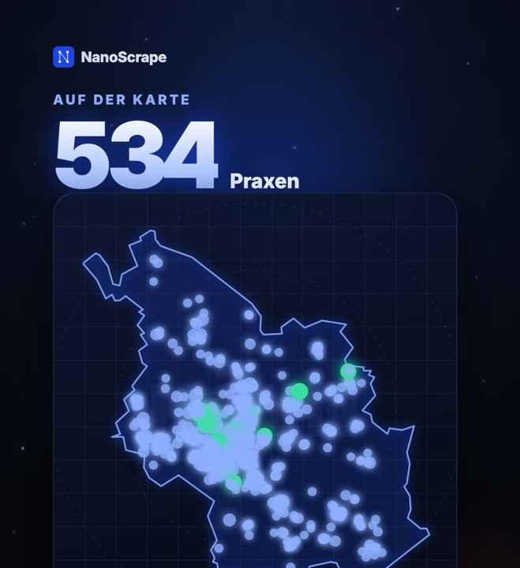
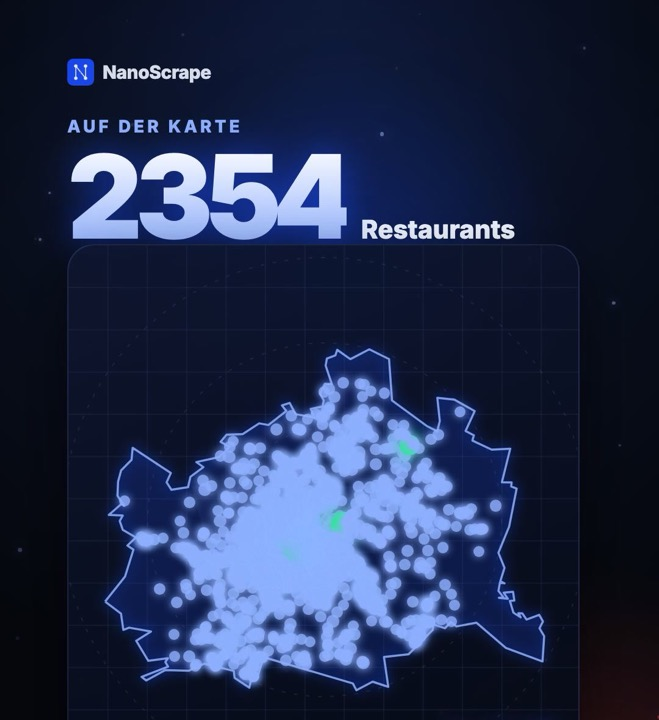
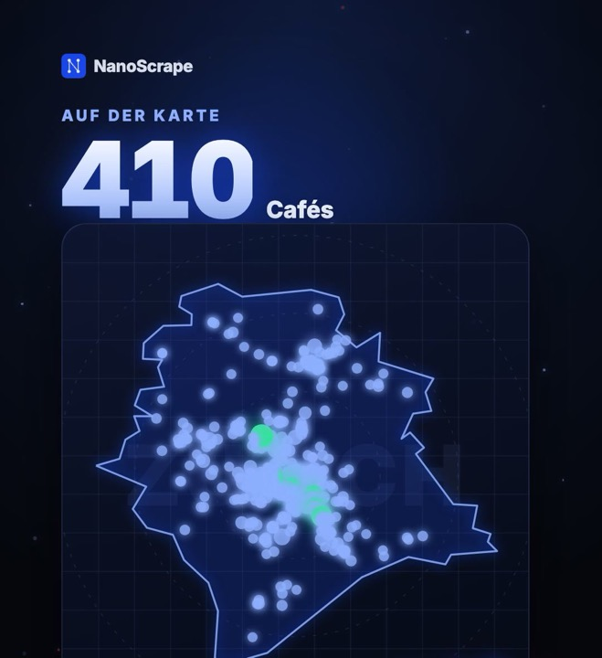

Google Maps Scraper: Firmendaten mit Telefon, Website und Bewertung exportieren
Du willst eine Liste von Firmen aus Google Maps, mit Telefon, Website und Bewertung, als Tabelle? Der Google Maps Scraper auf Apify holt sie dir zu jedem Suchbegriff, ohne Google-API-Schlüssel und ohne Code. Hier sind die Eingaben, ein Prompt für Claude und ein echtes Beispiel: alle Zahnärzte in Hamburg.
In diesem Tutorial
- Das bekommst du
- Schritt 1: Apify-Konto anlegen
- Schritt 2: Suchbegriffe eintragen
- Schritt 3: Actor starten
- Schritt 4: Daten exportieren
- Beispiel: Zahnärzte in Hamburg
- Beispiel: Technik der Zahnarzt-Websites
- Beispiel: Fitnessstudios in Berlin
- Beispiel: Friseure in München
- Beispiel: Physiotherapie in Köln
- Beispiel: Restaurants in Wien
- Beispiel: Cafés in Zürich
- E-Mails und Anreicherung
- Prompt für Claude
- Wichtige Felder
- Kosten
- FAQ
Das bekommst du
Der Google Maps Scraper sucht auf Google Maps nach deinen Suchbegriffen und legt jeden gefundenen Ort als Zeile in einer Tabelle ab. Du brauchst keinen Google-API-Schlüssel und keinen Code. Pro Ort bekommst du unter anderem:
- Name, Kategorie und Adresse, die Adresse auch zerlegt in Straße, PLZ, Ort und Land (
complete_address). - Telefon und Website, wenn der Eintrag sie hat.
- Bewertung und Anzahl Bewertungen, Öffnungszeiten und Status (geöffnet oder dauerhaft geschlossen).
- Koordinaten (
latitude,longitude) und die dauerhafte Google-IDplace_id, mit der du Duplikate entfernst.
E-Mail-Adressen stehen nicht auf Google Maps. Wie du sie trotzdem bekommst, steht weiter unten bei E-Mails und Anreicherung.
Apify-Konto anlegen
- Öffne die Seite des Google Maps Scrapers auf Apify.
- Klicke auf Try for free und registriere dich mit Google oder E-Mail.
- Du landest in der Apify Console im Tab Input des Actors. Für kleine Läufe reicht das monatliche Gratis-Guthaben des Free-Plans.
Suchbegriffe eintragen
Schreib Branche und Ort zusammen in einen Suchbegriff, einen pro Zeile. Im JSON-Editor sieht das so aus:
{
"searchStrings": [
"Steuerberater in München",
"Physiotherapie in Köln"
],
"maxResultsPerQuery": 50,
"language": "de"
}searchStrings: deine Suchbegriffe. Jeder läuft als eigene Google-Maps-Suche, alle Ergebnisse landen in einer Tabelle.maxResultsPerQuery: wie viele Orte pro Suche höchstens. 20 für einen schnellen Test, 200 für große Städte.maxTotalResults: optionale Obergrenze über alle Suchen. Gut, um die Kosten zu deckeln.language:defür deutsche Namen und Kategorien.
Actor starten
Klicke auf Start. Die Ergebnisse erscheinen im Tab Output, während der Lauf noch läuft. Kleine Läufe mit unter 100 Orten sind meist in unter einer Minute fertig.
Daten exportieren
Im Tab Output klickst du auf Export und wählst CSV, Excel oder JSON. CSV und Excel öffnest du direkt in Google Sheets oder Excel; verschachtelte Felder wie complete_address werden dabei in eigene Spalten aufgeteilt.
Beispiel: alle Zahnärzte in Hamburg
Dieses Beispiel steckt hinter unserem Short zu Hamburger Zahnärzten. Statt einer Suche „Zahnarzt Hamburg“ läuft eine Suche pro Stadtteil, 46 Suchen mit bis zu 200 Orten.
- 3.812 Einträge kamen zurück. Benachbarte Stadtteile überschneiden sich, dieselbe Praxis taucht also mehrfach auf.
- Nach dem Entfernen von Duplikaten nach
place_id, nur Zahnarzt-Kategorien, nur PLZ 20xxx bis 22xxx mit „Hamburg“ in der Adresse und ohne Dentallabore blieben 498 Praxen. - 422 davon haben eine Webseite, 342 sind mit 4,5 oder besser bewertet.
Kosten, geschätzt: 3.812 Orte × 0,001 $ = etwa 3,80 $ im Free-Plan. Unser Testlauf am 19.10.2026 lief lokal in 8 Teilen, etwa 9 Minuten; abgerechnet auf Apify haben wir genau diesen Lauf nicht.
Die Eingabe für Apify (Tab Input, auf JSON umstellen, einfügen, Start):
Eingabe mit allen 46 Stadtteilen anzeigen
{
"searchStrings": [
"Zahnarzt in Hamburg-Altstadt",
"Zahnarzt in Hamburg-Neustadt",
"Zahnarzt in Hamburg-St. Georg",
"Zahnarzt in Hamburg-St. Pauli",
"Zahnarzt in Hamburg-HafenCity",
"Zahnarzt in Hamburg-Hamm",
"Zahnarzt in Hamburg-Horn",
"Zahnarzt in Hamburg-Billstedt",
"Zahnarzt in Hamburg-Rothenburgsort",
"Zahnarzt in Hamburg-Altona",
"Zahnarzt in Hamburg-Ottensen",
"Zahnarzt in Hamburg-Bahrenfeld",
"Zahnarzt in Hamburg-Blankenese",
"Zahnarzt in Hamburg-Osdorf",
"Zahnarzt in Hamburg-Lurup",
"Zahnarzt in Hamburg-Rissen",
"Zahnarzt in Hamburg-Eimsbüttel",
"Zahnarzt in Hamburg-Harvestehude",
"Zahnarzt in Hamburg-Rotherbaum",
"Zahnarzt in Hamburg-Eppendorf",
"Zahnarzt in Hamburg-Lokstedt",
"Zahnarzt in Hamburg-Niendorf",
"Zahnarzt in Hamburg-Stellingen",
"Zahnarzt in Hamburg-Eidelstedt",
"Zahnarzt in Hamburg-Schnelsen",
"Zahnarzt in Hamburg-Winterhude",
"Zahnarzt in Hamburg-Barmbek",
"Zahnarzt in Hamburg-Uhlenhorst",
"Zahnarzt in Hamburg-Hohenfelde",
"Zahnarzt in Hamburg-Fuhlsbüttel",
"Zahnarzt in Hamburg-Langenhorn",
"Zahnarzt in Hamburg-Ohlsdorf",
"Zahnarzt in Hamburg-Wandsbek",
"Zahnarzt in Hamburg-Eilbek",
"Zahnarzt in Hamburg-Rahlstedt",
"Zahnarzt in Hamburg-Bramfeld",
"Zahnarzt in Hamburg-Volksdorf",
"Zahnarzt in Hamburg-Poppenbüttel",
"Zahnarzt in Hamburg-Sasel",
"Zahnarzt in Hamburg-Farmsen-Berne",
"Zahnarzt in Hamburg-Jenfeld",
"Zahnarzt in Hamburg-Bergedorf",
"Zahnarzt in Hamburg-Lohbrügge",
"Zahnarzt in Hamburg-Harburg",
"Zahnarzt in Hamburg-Wilhelmsburg",
"Zahnarzt in Hamburg-Neugraben-Fischbek"
],
"maxResultsPerQuery": 200,
"language": "de"
}Oder mit Claude (Einrichtung siehe Claude-Prompt). Claude nennt dir zuerst die Kosten und wartet auf dein OK:
Nutze den Apify MCP Server. Starte den Actor santamaria-automations/google-maps-scraper mit einer Suche pro Hamburger Stadtteil („Zahnarzt in Hamburg-Altstadt“, „Zahnarzt in Hamburg-Eppendorf“ und so weiter für diese Stadtteile: Altstadt, Neustadt, St. Georg, St. Pauli, HafenCity, Hamm, Horn, Billstedt, Rothenburgsort, Altona, Ottensen, Bahrenfeld, Blankenese, Osdorf, Lurup, Rissen, Eimsbüttel, Harvestehude, Rotherbaum, Eppendorf, Lokstedt, Niendorf, Stellingen, Eidelstedt, Schnelsen, Winterhude, Barmbek, Uhlenhorst, Hohenfelde, Fuhlsbüttel, Langenhorn, Ohlsdorf, Wandsbek, Eilbek, Rahlstedt, Bramfeld, Volksdorf, Poppenbüttel, Sasel, Farmsen-Berne, Jenfeld, Bergedorf, Lohbrügge, Harburg, Wilhelmsburg, Neugraben-Fischbek), höchstens 200 Ergebnissen pro Suche, Sprache de.
Sag mir vor dem Start, was der Lauf kostet, und warte auf mein OK.
Wenn er fertig ist, entferne Duplikate nach place_id, behalte nur Zahnarztpraxen mit Hamburger PLZ (ohne Dentallabore) und gib mir eine Tabelle mit Name, Telefon, Website, Bewertung und PLZ, sortiert nach Bewertung, ohne Praxen ohne Website.Die Bereinigung machst du in Google Sheets (Daten → Datenbereinigung → Duplikate entfernen nach place_id, dann filtern) oder lässt Claude sie mit dem Prompt erledigen. Für einen günstigen ersten Test nimm 3 oder 4 Stadtteile und setze maxResultsPerQuery auf 50.
Beispiel: Mit welcher Technik laufen die Websites der Hamburger Zahnärzte?
Das Add-on Tech-Stack (enableTechStack, kein API-Key nötig) erkennt auf jeder Website CMS, Frameworks, Analytics, Server und CDN anhand bekannter Muster im Code und in den Headern.
Wir haben denselben Erkennungs-Actor, den das Add-on nutzt, lokal am 23.10.2026 auf die 393 verschiedenen Websites der 498 Hamburger Praxen von oben laufen lassen (manche Praxen teilen sich eine Website, wir zählen jede Website einmal). 376 davon antworteten normal (HTTP 200):
- 166 laufen mit WordPress, davon 70 mit dem Plugin Yoast SEO und 33 mit dem Page-Builder Elementor.
- 25 nutzen einen Baukasten (Wix, Jimdo oder Squarespace).
- Bei 155 wurde kein CMS erkannt. Das heißt nicht, dass es keins gibt: Manche Systeme hinterlassen keine erkennbaren Spuren.
Wer das nutzt: Anbieter von WordPress-Wartung, Hosting oder SEO, die gezielt Praxen mit einem bestimmten System ansprechen wollen. Skripte, die erst nach der Cookie-Zustimmung laden, sieht der Check nicht. Fehlende Analytics in den Daten heißen also nicht, dass eine Website keine nutzt.
In einem Lauf: Ergänze die Hamburg-Eingabe oben um diese Zeile:
"enableTechStack": trueKosten, geschätzt: Das Add-on rechnet der Website Tech Stack Detector in deinem Apify-Konto ab, 0,001 $ pro Lauf plus 0,005 $ pro Website. Für unsere 393 Websites sind das 0,001 $ + 393 × 0,005 $ = etwa 1,97 $, zusätzlich zu den Orten. In einem kombinierten Lauf prüft das Add-on jeden Ort mit Website vor dem Filtern, rechne also mit etwas mehr.
Oder mit Claude:
Nutze den Apify MCP Server. Starte den Actor santamaria-automations/google-maps-scraper mit derselben Eingabe wie im Hamburg-Beispiel (eine Suche pro Stadtteil, maxResultsPerQuery 200, Sprache de) und zusätzlich enableTechStack true.
Sag mir vor dem Start, was der Lauf kostet, und warte auf mein OK.
Wenn er fertig ist, behalte eine Zeile pro Website und zähle, wie viele Websites WordPress nutzen, wie viele davon Yoast SEO oder Elementor, wie viele Wix, Jimdo oder Squarespace und bei wie vielen kein CMS erkannt wurde. Gib mir dann eine Tabelle der WordPress-Praxen mit Name, Website und Telefon.Beispiel: alle Fitnessstudios in Berlin
Dieses Beispiel steckt hinter unserem Short zu Berliner Fitnessstudios. Wie in Hamburg läuft eine Suche pro Ortsteil, hier 30 Suchen mit bis zu 200 Orten.
- 2.768 Einträge kamen zurück, nach dem Entfernen von Duplikaten nach
place_idnoch 1.597. - Nur die Kategorien Fitnessstudio, Fitnessraum und Spa- und Fitnessstudio, nur Berlin mit PLZ 10000 bis 14999, ohne Outdoor- und Calisthenics-Parks: 582 Orte. 511 davon haben eine Telefonnummer oder eine Website.
- 447 mit Telefon, 473 mit Website, 340 mit 4,5 oder besser bewertet. Die meisten liegen in den PLZ 10117 (18), 10245 (13) und 12555 (12).
Kosten, geschätzt: 2.768 Orte × 0,001 $ = etwa 2,80 $ im Free-Plan. Unser Testlauf am 20.10.2026 lief lokal in 5 Teilen; abgerechnet auf Apify haben wir genau diesen Lauf nicht.
Eingabe mit allen 30 Ortsteilen anzeigen
{
"searchStrings": [
"Fitnessstudio in Berlin-Friedrichshain",
"Fitnessstudio in Berlin-Prenzlauer Berg",
"Fitnessstudio in Berlin-Mitte",
"Fitnessstudio in Berlin-Gesundbrunnen",
"Fitnessstudio in Berlin-Wedding",
"Fitnessstudio in Berlin-Moabit",
"Fitnessstudio in Berlin-Wilmersdorf",
"Fitnessstudio in Berlin-Kreuzberg",
"Fitnessstudio in Berlin-Neukölln",
"Fitnessstudio in Berlin-Schöneberg",
"Fitnessstudio in Berlin-Tempelhof",
"Fitnessstudio in Berlin-Charlottenburg",
"Fitnessstudio in Berlin-Weißensee",
"Fitnessstudio in Berlin-Lichtenberg",
"Fitnessstudio in Berlin-Spandau",
"Fitnessstudio in Berlin-Steglitz",
"Fitnessstudio in Berlin-Zehlendorf",
"Fitnessstudio in Berlin-Pankow",
"Fitnessstudio in Berlin-Köpenick",
"Fitnessstudio in Berlin-Tegel",
"Fitnessstudio in Berlin-Treptow",
"Fitnessstudio in Berlin-Hellersdorf",
"Fitnessstudio in Berlin-Marzahn",
"Fitnessstudio in Berlin-Reinickendorf",
"Fitnessstudio in Berlin-Karlshorst",
"Fitnessstudio in Berlin-Lichterfelde",
"Fitnessstudio in Berlin-Friedenau",
"Fitnessstudio in Berlin-Rudow",
"Fitnessstudio in Berlin-Britz",
"Fitnessstudio in Berlin-Adlershof"
],
"maxResultsPerQuery": 200,
"language": "de"
}Oder mit Claude:
Nutze den Apify MCP Server. Starte den Actor santamaria-automations/google-maps-scraper mit einer Suche pro Berliner Ortsteil („Fitnessstudio in Berlin-Mitte“, „Fitnessstudio in Berlin-Kreuzberg“ und so weiter für diese Ortsteile: Friedrichshain, Prenzlauer Berg, Mitte, Gesundbrunnen, Wedding, Moabit, Wilmersdorf, Kreuzberg, Neukölln, Schöneberg, Tempelhof, Charlottenburg, Weißensee, Lichtenberg, Spandau, Steglitz, Zehlendorf, Pankow, Köpenick, Tegel, Treptow, Hellersdorf, Marzahn, Reinickendorf, Karlshorst, Lichterfelde, Friedenau, Rudow, Britz, Adlershof), höchstens 200 Ergebnissen pro Suche, Sprache de.
Sag mir vor dem Start, was der Lauf kostet, und warte auf mein OK.
Wenn er fertig ist, entferne Duplikate nach place_id, behalte nur Fitnessstudios mit Berliner PLZ (ohne Outdoor-Parks) und gib mir eine Tabelle mit Name, Telefon, Website, Bewertung und PLZ, sortiert nach Bewertung.Beispiel: alle Friseure in München
Dieses Beispiel steckt hinter unserem Short zu Münchner Friseuren. Es läuft eine Suche pro Stadtbezirk, hier 26 Suchen mit bis zu 200 Orten („Friseur in Maxvorstadt, München“ und so weiter).
- 2.737 Einträge kamen zurück, nach dem Entfernen von Duplikaten nach
place_idnoch 1.451. - Nur die Kategorien Friseursalon, Coiffeur und Herrenfriseur: 1.362. Innerhalb der Münchner Stadtgrenze (nach Koordinaten): 1.133. 1.111 davon haben eine Telefonnummer oder eine Website.
- 1.099 mit Telefon, 819 mit Website, 924 mit 4,5 oder besser bewertet. Die meisten liegen in den PLZ 80469 (68), 80333 (46), 80331 (40), 81667 (39), 80339 (36) und 80337 (32).
Kosten, geschätzt: 2.737 Orte × 0,001 $ = etwa 2,74 $ im Free-Plan. Unser Testlauf am 21.10.2026 lief lokal in 5 Teilen; abgerechnet auf Apify haben wir genau diesen Lauf nicht.
Eingabe mit allen 26 Stadtbezirken anzeigen
{
"searchStrings": [
"Friseur in Altstadt-Lehel, München",
"Friseur in Ludwigsvorstadt-Isarvorstadt, München",
"Friseur in Maxvorstadt, München",
"Friseur in Schwabing-West, München",
"Friseur in Au-Haidhausen, München",
"Friseur in Sendling, München",
"Friseur in Sendling-Westpark, München",
"Friseur in Schwanthalerhöhe, München",
"Friseur in Neuhausen-Nymphenburg, München",
"Friseur in Moosach, München",
"Friseur in Milbertshofen-Am Hart, München",
"Friseur in Schwabing-Freimann, München",
"Friseur in Bogenhausen, München",
"Friseur in Berg am Laim, München",
"Friseur in Trudering-Riem, München",
"Friseur in Ramersdorf-Perlach, München",
"Friseur in Obergiesing-Fasangarten, München",
"Friseur in Untergiesing-Harlaching, München",
"Friseur in Thalkirchen-Obersendling, München",
"Friseur in Forstenried-Fürstenried-Solln, München",
"Friseur in Hadern, München",
"Friseur in Pasing-Obermenzing, München",
"Friseur in Aubing-Lochhausen-Langwied, München",
"Friseur in Allach-Untermenzing, München",
"Friseur in Feldmoching-Hasenbergl, München",
"Friseur in Laim, München"
],
"maxResultsPerQuery": 200,
"language": "de"
}Oder mit Claude:
Nutze den Apify MCP Server. Starte den Actor santamaria-automations/google-maps-scraper mit einer Suche pro Münchner Stadtbezirk („Friseur in Maxvorstadt, München“, „Friseur in Schwabing-West, München“ und so weiter für diese Stadtbezirke: Altstadt-Lehel, Ludwigsvorstadt-Isarvorstadt, Maxvorstadt, Schwabing-West, Au-Haidhausen, Sendling, Sendling-Westpark, Schwanthalerhöhe, Neuhausen-Nymphenburg, Moosach, Milbertshofen-Am Hart, Schwabing-Freimann, Bogenhausen, Berg am Laim, Trudering-Riem, Ramersdorf-Perlach, Obergiesing-Fasangarten, Untergiesing-Harlaching, Thalkirchen-Obersendling, Forstenried-Fürstenried-Solln, Hadern, Pasing-Obermenzing, Aubing-Lochhausen-Langwied, Allach-Untermenzing, Feldmoching-Hasenbergl, Laim), höchstens 200 Ergebnissen pro Suche, Sprache de.
Sag mir vor dem Start, was der Lauf kostet, und warte auf mein OK.
Wenn er fertig ist, entferne Duplikate nach place_id, behalte nur Friseursalons, Coiffeure und Herrenfriseure innerhalb der Münchner Stadtgrenze mit Telefon oder Website und gib mir eine Tabelle mit Name, Telefon, Website, Bewertung und PLZ, sortiert nach Bewertung.Beispiel: Physiotherapiepraxen in Köln

Dieses Beispiel steckt hinter unserem Short zu Kölner Physiotherapiepraxen. Es läuft eine Suche pro Stadtteil, hier 30 Suchen mit bis zu 200 Orten („Physiotherapie in Rodenkirchen, Köln“ und so weiter).
- 2.706 Einträge kamen zurück, nach dem Entfernen von Duplikaten nach
place_idnoch 1.102. - Nur die Kategorien Physiotherapeut und Physiotherapiezentrum, ohne Osteopathen und Reha-Kliniken: 862. Innerhalb der Kölner Stadtgrenze (nach Koordinaten): 539. 534 davon haben eine Telefonnummer oder eine Website.
- 525 mit Telefon, 463 mit Website, 416 mit 4,5 oder besser bewertet.
Kosten, geschätzt: 2.706 Orte × 0,001 $ = etwa 2,71 $ im Free-Plan. Unser Testlauf am 21.10.2026 lief lokal in 5 Teilen; abgerechnet auf Apify haben wir genau diesen Lauf nicht.
Eingabe mit allen 30 Stadtteilen anzeigen
{
"searchStrings": [
"Physiotherapie in Altstadt-Nord, Köln",
"Physiotherapie in Altstadt-Süd, Köln",
"Physiotherapie in Neustadt-Nord, Köln",
"Physiotherapie in Neustadt-Süd, Köln",
"Physiotherapie in Deutz, Köln",
"Physiotherapie in Rodenkirchen, Köln",
"Physiotherapie in Sülz, Köln",
"Physiotherapie in Klettenberg, Köln",
"Physiotherapie in Lindenthal, Köln",
"Physiotherapie in Braunsfeld, Köln",
"Physiotherapie in Ehrenfeld, Köln",
"Physiotherapie in Bickendorf, Köln",
"Physiotherapie in Nippes, Köln",
"Physiotherapie in Longerich, Köln",
"Physiotherapie in Chorweiler, Köln",
"Physiotherapie in Porz, Köln",
"Physiotherapie in Kalk, Köln",
"Physiotherapie in Mülheim, Köln",
"Physiotherapie in Dellbrück, Köln",
"Physiotherapie in Buchheim, Köln",
"Physiotherapie in Weiden, Köln",
"Physiotherapie in Lövenich, Köln",
"Physiotherapie in Zollstock, Köln",
"Physiotherapie in Bayenthal, Köln",
"Physiotherapie in Höhenberg, Köln",
"Physiotherapie in Brück, Köln",
"Physiotherapie in Rath/Heumar, Köln",
"Physiotherapie in Zündorf, Köln",
"Physiotherapie in Weidenpesch, Köln",
"Physiotherapie in Bocklemünd, Köln"
],
"maxResultsPerQuery": 200,
"language": "de"
}Oder mit Claude:
Nutze den Apify MCP Server. Starte den Actor santamaria-automations/google-maps-scraper mit einer Suche pro Kölner Stadtteil („Physiotherapie in Rodenkirchen, Köln“, „Physiotherapie in Ehrenfeld, Köln“ und so weiter für diese Stadtteile: Altstadt-Nord, Altstadt-Süd, Neustadt-Nord, Neustadt-Süd, Deutz, Rodenkirchen, Sülz, Klettenberg, Lindenthal, Braunsfeld, Ehrenfeld, Bickendorf, Nippes, Longerich, Chorweiler, Porz, Kalk, Mülheim, Dellbrück, Buchheim, Weiden, Lövenich, Zollstock, Bayenthal, Höhenberg, Brück, Rath/Heumar, Zündorf, Weidenpesch, Bocklemünd), höchstens 200 Ergebnissen pro Suche, Sprache de.
Sag mir vor dem Start, was der Lauf kostet, und warte auf mein OK.
Wenn er fertig ist, entferne Duplikate nach place_id, behalte nur Physiotherapeuten und Physiotherapiezentren (keine Osteopathen, keine Reha-Kliniken) innerhalb der Kölner Stadtgrenze mit Telefon oder Website und gib mir eine Tabelle mit Name, Telefon, Website, Bewertung und PLZ, sortiert nach Bewertung.Beispiel: Restaurants in Wien

Dieses Beispiel steckt hinter unserem Short zu Wiener Restaurants. Es läuft eine Suche pro Bezirk, hier 23 Suchen mit bis zu 200 Orten („Restaurant in Mariahilf, Wien“ und so weiter).
- 3.635 Einträge kamen zurück, nach dem Entfernen von Duplikaten nach
place_idnoch 2.876. - Nur Restaurant-Kategorien (Restaurant, Pizzeria, Imbiss, Trattoria, Wirtshaus, Beisl, Heuriger, Gasthaus, Osteria, Bistro): 2.604. Innerhalb der Wiener Stadtgrenze (nach Koordinaten): 2.432. 2.354 davon haben eine Telefonnummer oder eine Website.
- 2.273 mit Telefon, 2.014 mit Website, 1.318 mit 4,5 oder besser bewertet.
Kosten, geschätzt: 3.635 Orte × 0,001 $ = etwa 3,64 $ im Free-Plan. Unser Testlauf am 21.10.2026 lief lokal in 4 Teilen; abgerechnet auf Apify haben wir genau diesen Lauf nicht.
Eingabe mit allen 23 Bezirken anzeigen
{
"searchStrings": [
"Restaurant in Innere Stadt, Wien",
"Restaurant in Leopoldstadt, Wien",
"Restaurant in Landstraße, Wien",
"Restaurant in Wieden, Wien",
"Restaurant in Margareten, Wien",
"Restaurant in Mariahilf, Wien",
"Restaurant in Neubau, Wien",
"Restaurant in Josefstadt, Wien",
"Restaurant in Alsergrund, Wien",
"Restaurant in Favoriten, Wien",
"Restaurant in Simmering, Wien",
"Restaurant in Meidling, Wien",
"Restaurant in Hietzing, Wien",
"Restaurant in Penzing, Wien",
"Restaurant in Rudolfsheim-Fünfhaus, Wien",
"Restaurant in Ottakring, Wien",
"Restaurant in Hernals, Wien",
"Restaurant in Währing, Wien",
"Restaurant in Döbling, Wien",
"Restaurant in Brigittenau, Wien",
"Restaurant in Floridsdorf, Wien",
"Restaurant in Donaustadt, Wien",
"Restaurant in Liesing, Wien"
],
"maxResultsPerQuery": 200,
"language": "de"
}Oder mit Claude:
Nutze den Apify MCP Server. Starte den Actor santamaria-automations/google-maps-scraper mit einer Suche pro Wiener Bezirk („Restaurant in Mariahilf, Wien“, „Restaurant in Simmering, Wien“ und so weiter für diese Bezirke: Innere Stadt, Leopoldstadt, Landstraße, Wieden, Margareten, Mariahilf, Neubau, Josefstadt, Alsergrund, Favoriten, Simmering, Meidling, Hietzing, Penzing, Rudolfsheim-Fünfhaus, Ottakring, Hernals, Währing, Döbling, Brigittenau, Floridsdorf, Donaustadt, Liesing), höchstens 200 Ergebnissen pro Suche, Sprache de.
Sag mir vor dem Start, was der Lauf kostet, und warte auf mein OK.
Wenn er fertig ist, entferne Duplikate nach place_id, behalte nur Restaurants der Kategorien Restaurant, Pizzeria, Imbiss, Trattoria, Wirtshaus, Beisl, Heuriger, Gasthaus, Osteria und Bistro innerhalb der Wiener Stadtgrenze mit Telefon oder Website und gib mir eine Tabelle mit Name, Telefon, Website, Bewertung und PLZ, sortiert nach Bewertung.Beispiel: Cafés in Zürich

Dieses Beispiel steckt hinter unserem Short zu Zürcher Cafés. Es läuft eine Suche pro Quartier, hier 24 Suchen mit bis zu 200 Orten („Café in Hottingen, Zürich“ und so weiter).
- 1.841 Einträge kamen zurück, nach dem Entfernen von Duplikaten nach
place_idnoch 792. - Nur die Kategorien Café, Coffeeshop, Kunst-Café, Kaffeegeschäft und Kaffeestand, ohne Bäckereien, Bars und Restaurants: 661. Innerhalb der Stadtgrenze von Zürich (nach Koordinaten): 480. 410 davon haben eine Telefonnummer oder eine Website.
- 328 mit Telefon, 380 mit Website, 203 mit 4,5 oder besser bewertet.
Kosten, geschätzt: 1.841 Orte × 0,001 $ = etwa 1,84 $ im Free-Plan. Unser Testlauf am 21.10.2026 lief lokal in 4 Teilen; abgerechnet auf Apify haben wir genau diesen Lauf nicht.
Eingabe mit allen 24 Quartieren anzeigen
{
"searchStrings": [
"Café in Altstadt, Zürich",
"Café in Enge, Zürich",
"Café in Wiedikon, Zürich",
"Café in Aussersihl, Zürich",
"Café in Industriequartier, Zürich",
"Café in Hottingen, Zürich",
"Café in Fluntern, Zürich",
"Café in Hirslanden, Zürich",
"Café in Riesbach, Zürich",
"Café in Seefeld, Zürich",
"Café in Wipkingen, Zürich",
"Café in Höngg, Zürich",
"Café in Oerlikon, Zürich",
"Café in Seebach, Zürich",
"Café in Affoltern, Zürich",
"Café in Altstetten, Zürich",
"Café in Albisrieden, Zürich",
"Café in Schwamendingen, Zürich",
"Café in Wollishofen, Zürich",
"Café in Leimbach, Zürich",
"Café in Witikon, Zürich",
"Café in Unterstrass, Zürich",
"Café in Oberstrass, Zürich",
"Café in Langstrasse, Zürich"
],
"maxResultsPerQuery": 200,
"language": "de"
}Oder mit Claude:
Nutze den Apify MCP Server. Starte den Actor santamaria-automations/google-maps-scraper mit einer Suche pro Zürcher Quartier („Café in Hottingen, Zürich“, „Café in Wipkingen, Zürich“ und so weiter für diese Quartiere: Altstadt, Enge, Wiedikon, Aussersihl, Industriequartier, Hottingen, Fluntern, Hirslanden, Riesbach, Seefeld, Wipkingen, Höngg, Oerlikon, Seebach, Affoltern, Altstetten, Albisrieden, Schwamendingen, Wollishofen, Leimbach, Witikon, Unterstrass, Oberstrass, Langstrasse), höchstens 200 Ergebnissen pro Suche, Sprache de.
Sag mir vor dem Start, was der Lauf kostet, und warte auf mein OK.
Wenn er fertig ist, entferne Duplikate nach place_id, behalte nur Cafés der Kategorien Café, Coffeeshop, Kunst-Café, Kaffeegeschäft und Kaffeestand (keine Bäckereien, Bars oder Restaurants) innerhalb der Stadtgrenze von Zürich mit Telefon oder Website und gib mir eine Tabelle mit Name, Telefon, Website, Bewertung und PLZ, sortiert nach Bewertung.E-Mails und Anreicherung
Mit "enableEmailExtraction": true besucht der Actor die Website jedes Orts und sucht dort E-Mail-Adressen, Telefonnummern und Social-Media-Links. Sie landen in derselben Zeile in emails_from_website, phones_from_website und social_urls.
{
"searchStrings": [
"Steuerberater in München"
],
"maxResultsPerQuery": 50,
"language": "de",
"enableEmailExtraction": true
}Alternativ gibst du die Spalte website später in den Website Email Scraper. Mit einem eigenen Gemini-, Groq- oder OpenRouter-Schlüssel kann der Actor außerdem Ansprechpartner, offene Stellen und einen persönlichen Einstiegssatz pro Firma erzeugen; die Details stehen im englischen Tutorial.
Prompt für Claude zum Kopieren
Füge in Claude den Apify MCP Server als eigenen Konnektor mit dieser URL hinzu (siehe Apifys MCP-Dokumentation). Die URL beschränkt Claude auf diesen einen Actor:
https://mcp.apify.com?tools=santamaria-automations/google-maps-scraperDann fügst du diesen Prompt ein und ersetzt die Suche durch deine. Claude nennt dir zuerst die Kosten und wartet auf dein OK, bevor der Lauf startet:
Nutze den Apify MCP Server. Starte den Actor santamaria-automations/google-maps-scraper mit der Suche
"Steuerberater in München" und höchstens 100 Ergebnissen, Sprache de.
Sag mir vor dem Start, was der Lauf kostet, und warte auf mein OK.
Wenn er fertig ist, gib mir eine Tabelle mit Name, Telefon, Website, Bewertung und PLZ, sortiert nach Bewertung.Für eine ganze Stadt nimm den Prompt aus dem Beispiel Hamburg. Getestet haben wir den Actor und die Eingaben, nicht die Prompts über MCP; Claude formuliert die Kostenangabe eventuell anders.
Wichtige Felder
title: Name des Orts wie auf Google Maps.category/categories: Hauptkategorie und alle Kategorien.addressundcomplete_address: Adresse als Text und zerlegt (Straße, PLZ, Ort, Land).phone,website: Kontakt, wenn vorhanden.rating,review_count: Bewertung (1 bis 5) und Anzahl Bewertungen.latitude,longitude: Koordinaten.opening_hours,status: Öffnungszeiten und ob der Ort geöffnet ist.place_id,link: dauerhafte Google-ID und Link zum Eintrag.
Was das kostet
Der Actor rechnet pro gefundenem Ort ab, nicht pro Lauf (Preise laut Apify, Stand 19.10.2026):
- Ort: 0,001 $ im Free-Plan (1 $ pro 1.000 Orte), 0,00097 $ auf Bronze, 0,00089 $ auf Silver, 0,00075 $ ab Gold.
- Actor-Start: 0,00005 $ pro Lauf, dazu etwas Plattformnutzung.
Du zahlst für jeden zurückgegebenen Ort, auch für Duplikate, die du danach entfernst. Ein Test mit 2 Suchen und je 50 Orten kostet also höchstens etwa 0,10 $. Der Free-Plan von Apify enthält ein monatliches Guthaben; den aktuellen Betrag findest du auf Apifys Preisseite.
Häufige Fragen
Brauche ich einen Google-API-Schlüssel?
Nein. Der Actor nutzt nicht die Google Places API. Du brauchst nur ein Apify-Konto.
Bekomme ich E-Mail-Adressen?
Google Maps zeigt keine E-Mails. Mit enableEmailExtraction sucht der Actor sie auf der Website jedes Orts, oder du gibst die Website-Spalte in den Website Email Scraper.
Warum nicht einfach „Zahnarzt Hamburg“ suchen?
Google Maps zeigt pro Suche nur eine begrenzte Zahl von Orten, eine Suche deckt also nur einen Teil einer großen Stadt ab. Eine Suche pro Stadtteil deckt viel mehr ab; dafür zahlst du die Überschneidungen, die du danach entfernst.
Was kostet der Google Maps Scraper?
0,001 $ pro gefundenem Ort im Free-Plan, auf bezahlten Apify-Plänen weniger. Das Beispiel Hamburg mit 3.812 Orten kostet geschätzt etwa 3,80 $.
Brauche ich Claude?
Nein. Die Schritte 1 bis 4 funktionieren komplett in der Apify Console. Claude erledigt Kostenprüfung, Lauf und Bereinigung nur in einem Schritt.
Geht das für andere Städte und Branchen?
Ja, weltweit. Nimm eine Suche pro Stadtteil deiner Stadt und ersetze die Branche durch deine. Die Felder bleiben gleich.
Hinweis zu Datenschutz und Recht
Der Actor sammelt Einträge, die auf Google Maps öffentlich angezeigt werden. Für personenbezogene Daten (zum Beispiel den Namen eines Einzelunternehmers oder eine private Nummer) bist du verantwortlich. Du musst die DSGVO, nationale Datenschutz- und Werbegesetze (in Deutschland zum Beispiel das UWG) und die Nutzungsbedingungen von Google einhalten. Prüfe vor Kaltakquise die Regeln und frag im Zweifel eine Anwältin oder einen Anwalt.
Weiterführende Links
- Google Maps Scraper, Actor-Seite: Felder, Preise und Vergleich.
- Google Maps Scraper Tutorial (Englisch): alle Eingaben, KI-Anreicherung und strukturierte Suchen.
- Herold Scraper Tutorial: Firmendaten aus Österreichs Gelben Seiten.
- Website Email Scraper: E-Mails auf den gefundenen Webseiten finden.